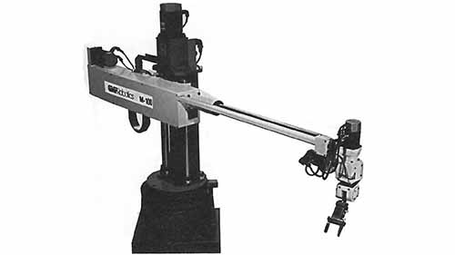

A base gira enquanto o braço realiza deslocamentos radiais e verticais.
ROBÓTICA INDUSTRIAL / CILÍNDRICO
ROBÔ CILÍNDRICO
Movimentos rotativos e lineares.

CILÍNDRICOCATÁLOGO TÉCNICO05 / PERFIL DO ROBÔ
ROTAÇÃO + DESLOCAMENTO EM UM ESPAÇO CILÍNDRICO.
O robô cilíndrico combina rotação da base com movimentos lineares. O resultado é um envelope de trabalho adequado a tarefas específicas de manipulação e alimentação.
Seu formato organiza o alcance ao redor da base e pode simplificar determinadas células.
Alimentação de máquinas, movimentação de peças e operações repetitivas em áreas delimitadas.
01 / CONCEITO
COMO FUNCIONA
O robô cilíndrico trabalha em um espaço de coordenadas cilíndricas, combinando rotação da base com movimentos lineares, incluindo deslocamento vertical e radial.
CARACTERÍSTICAS
- Coordenadas cilíndricas
- Rotação da base
- Movimento no eixo Z
- Movimento radial
- Estrutura adequada a determinadas células industriais
02 / APLICAÇÕES
ONDE É UTILIZADO
Manipulação de peçasTransferência de materiaisOperações em máquinasAplicações em processos de semicondutoresMontagem
03 / INDÚSTRIA 4.0
INTEGRAÇÃO COM IoT
Sensores de posição e condição podem registrar ciclos, deslocamentos e anomalias. A conectividade permite enviar esses dados para sistemas de supervisão e análise.
SENSORES→CONTROLADOR→ROBÔ→DADOS
04 / MERCADO
FABRICANTES E MODELOS
Nachi-FujikoshiSC Series
FANUCcylindrical robot solutions
Kawasaki Roboticscylindrical robot solutions
Os exemplos representam fabricantes conhecidos do setor; modelos e especificações variam conforme aplicação.
01
Cilíndrico
O desempenho depende de fatores como carga, alcance, precisão, velocidade, ferramenta e configuração da célula.
02
Aplicação
A escolha do tipo de robô deve considerar a tarefa, o espaço disponível, os requisitos de segurança e o processo produtivo.
03
Conectividade
Sensores, controladores e redes permitem acompanhar o processo e transformar dados operacionais em informações úteis.